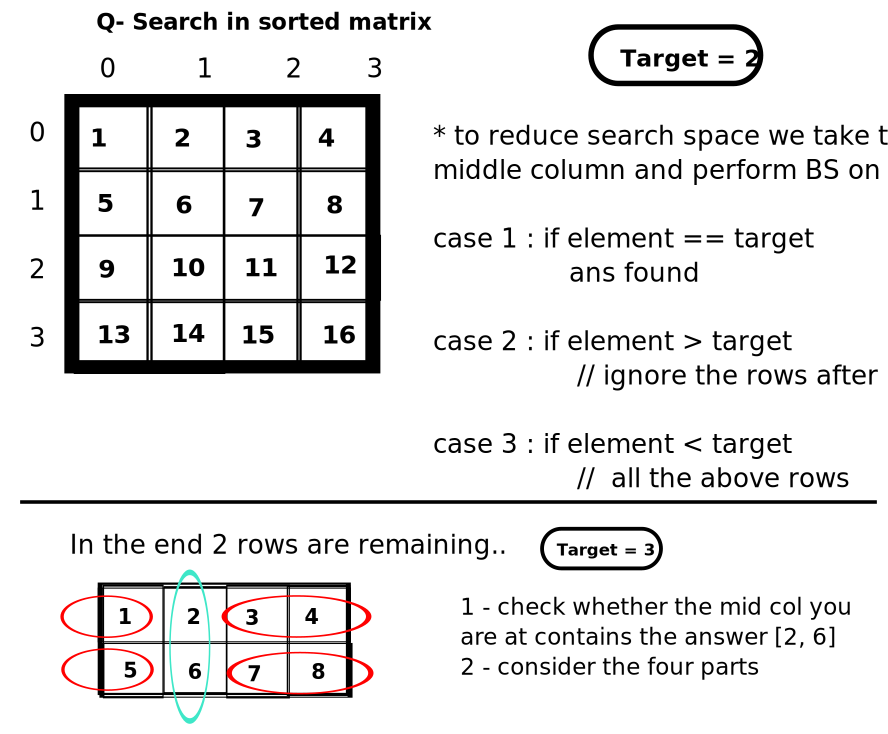

Here, we have to think about how we can eleminate rows and columns
we have to set upper and lower bound just like 1D array binary search
So lower bound = [0, 0]
and upper bound = [first_row, last_column]
import java.util.Arrays;
public class RowColMatrix {
public static void main(String[] args) {
int[][] arr = {
{ 10, 20, 30, 40 },
{ 15, 25, 35, 45 },
{ 28, 29, 37, 49 },
{ 23, 34, 38, 50 }
};
System.out.println(Arrays.toString(search(arr, 37)));
}
static int[] search(int[][] matrix, int target) {
int r = 0;
int c = matrix.length - 1;
while (r < matrix.length && c >= 0) {
if (matrix[r][c] == target) {
return new int[] { r, c };
}
if (matrix[r][c] < target) {
r++;
} else {
c--;
}
}
return new int[] { -1, -1 };
}
}

import java.util.Arrays;
public class RowColMatrix {
public static void main(String[] args) {
int[][] arr = {
{1, 2, 3},
{4, 5, 6},
{7, 8, 9}
};
System.out.println(Arrays.toString(search(arr, 9)));
}
// search in the row provided between the cols provided
static int[] binarySearch(int[][] matrix, int row, int cStart, int cEnd, int target) {
while (cStart <= cEnd) {
int mid = cStart + (cEnd - cStart) / 2;
if (matrix[row][mid] == target) {
return new int[]{row, mid};
}
if (matrix[row][mid] < target) {
cStart = mid + 1;
} else {
cEnd = mid - 1;
}
}
return new int[]{-1, -1};
}
static int[] search(int[][] matrix, int target) {
int rows = matrix.length;
int cols = matrix[0].length; // be cautious, matrix may be empty
if (cols == 0){
return new int[] {-1,-1};
}
if (rows == 1) {
return binarySearch(matrix,0, 0, cols-1, target);
}
int rStart = 0;
int rEnd = rows - 1;
int cMid = cols / 2;
// run the loop till 2 rows are remaining
while (rStart < (rEnd - 1)) { // while this is true it will have more than 2 rows
int mid = rStart + (rEnd - rStart) / 2;
if (matrix[mid][cMid] == target) {
return new int[]{mid, cMid};
}
if (matrix[mid][cMid] < target) {
rStart = mid;
} else {
rEnd = mid;
}
}
// now we have two rows
// check whether the target is in the col of 2 rows
if (matrix[rStart][cMid] == target) {
return new int[]{rStart, cMid};
}
if (matrix[rStart + 1][cMid] == target) {
return new int[]{rStart + 1, cMid};
}
// search in 1st half
if (target <= matrix[rStart][cMid - 1]) {
return binarySearch(matrix, rStart, 0, cMid-1, target);
}
// search in 2nd half
if (target >= matrix[rStart][cMid + 1] && target <= matrix[rStart][cols - 1]) {
return binarySearch(matrix, rStart, cMid + 1, cols - 1, target);
}
// search in 3rd half
if (target <= matrix[rStart + 1][cMid - 1]) {
return binarySearch(matrix, rStart + 1, 0, cMid-1, target);
} else {
return binarySearch(matrix, rStart + 1, cMid + 1, cols - 1, target);
}
}
}